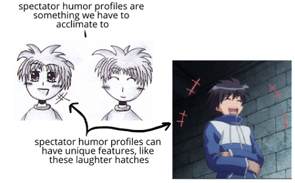
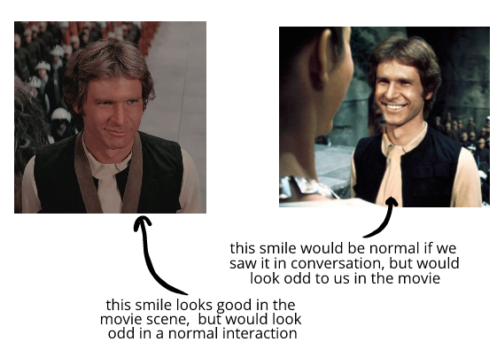

Different kinds of spectator entertainment have different constraints in how humor can be presented. So they develop medium-specific spectator humor profiles to make the best of the constraints:
(and so on)
Once we get used to spectator humor profiles, they don't seems surreal—like how reading a novel seems completely normal to us:
"Eavesdroppers--" Scarlett began furiously.
"Eavesdroppers often hear highly entertaining and instructive things," Rhett grinned.
"Sir," she said, "you are no gentleman!"
"An apt observation," he answered airily. "And, you, Miss, are no lady." He seemed to find her very amusing, for he laughed softly again.
We don’t usually notice that these spectator humor profiles are artificial or surreal until we have to acclimate to new genres. n
For instance:
If we’ve never read any manga or watched any anime, it'll take us a while for their spectator humor profiles to stop seeming artificial or stilted:
For a while, emotions in manga would strike us as annoying, distracting, simplistic, unrelatable, weird, and so on. But this is how all spectator entertainment feels at first.
Once we acclimate to different spectator humor profiles, they becomes unnoticeably normal—and the spectator humor profile does what it’s supposed to do, which is to efficiently convey information about the character’s evaluations.
At that point, we roll everything together as part of the experience, and nothing in particular stands out to us as unusual—we read a novel, watch a movie, enjoy a graphic novel, and don't register that the way they depict humor is an abstract representation.
Consider:
Novels use concise, conventional descriptions
There are a few reason spectator humor profiles exist:
For instance:
If we were talking to the actor below at a bus stop, we'd prefer he smile like he is on the right—since then we'd both be feeling
But when we’re simply looking at a still picture, the broad smile looks a bit odd. We don't currently think characters should smile broadly in movies like this:
(and so on)
All of these can lead to spectator humor profiles—like how movie characters won't smile or laugh intensely for various reasons, supported both by the script and the directing.
For most movies, emotional realism isn't the goal. Instead, the goal is the emotional handling of the audience—not realism for realism's sake. This includes how actors use humor tells.
We don't usually notice conventions in novels as artificial or stilted, because we're so used to them.
For instance, we probably didn't bat an eye at Rhett "laughing softly" in the passage from Gone With the Wind—it's so normal it's hard to think about
But just because it's normal doesn't mean it's realistic. We can see this by noticing how undefined that is—we could imagine a thousand different acted scenes with a thousand different interpretations of Rhett "laughing softly."
We can see on actor's interpretation below:
At first glance, we may not notice that the actor is using a spectator humor profile. But he is! On a general level, if we had two comparative videos—this video of acted humor and another video of felt humor—no one would pick this scene as the more "realistic" humor.
On a more specific level, we can notice how the actor is supporting the needs of the medium—like how we walks to stand close enough to the other actor so that both are in frame. He also speaks in measured, complete sentences—all things that are done to support the conventions and limitations of films of this time period, not mirror reality.
The point of all this isn't to take away from spectator entertainment. Instead, the point is just to recognize how depictions of humor in spectator entertainment are different than how humor is experienced and expressed in our own interpersonal lives.
"Sir, you should have made known your presence."
"Indeed?" His white teeth gleamed and his bold dark eyes laughed at her. "But you were the intruder. I was forced to wait for Mr. Kennedy, and feeling that I was perhaps persona non grata in the back yard, I was thoughtful enough to remove my unwelcome presence here where I thought I would be undisturbed. But, alas!" he shrugged and laughed softly.
Her temper was beginning to rise again at the thought that this rude and impertinent man had heard everything--heard things she now wished she had died before she ever uttered.
"Eavesdroppers--" she began furiously. "Eavesdroppers often hear highly entertaining and instructive things," he grinned. "From a long experience in eavesdropping, I--"
"Sir," she said, "you are no gentleman!"
"An apt observation," he answered airily. "And, you, Miss, are no lady." He seemed to find her very amusing, for he laughed softly again. "No one can remain a lady after saying and doing what have just overheard. However, ladies have seldom held any charms for me. I know what they are thinking, but they never have the courage or lack of breeding to say what they think. And that, in time, becomes a bore. But you, my dear Miss O'Hara, are a girl of rare spirit, very admirable spirit, and I take off my hat to you. I fail to understand what charms the elegant Mr. Wilkes can hold for a girl of your tempestuous nature. He should thank God on bended knee for a girl with your--how did he put it?--'passion for living,' but being a poor-spirited wretch--"
"You aren't fit to wipe his boots!" she shouted in rage.
"And you were going to hate him all your life!" He sank down on the sofa and she heard him laughing.